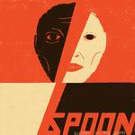
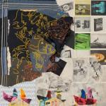
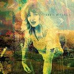
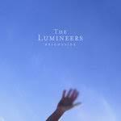

Music Reviews
-

Gang of Youths angel in realtime.
The London-via-Sydney indie rock band are not coy in taking it up a notch on their third LP, delivering a lush, high-minded statement that befits frontman David Le'aupepe’s extraordinary life story.
Juan Edgardo Rodríguez reviews... -

String Machine Hallelujah Hell Yeah
On their third LP, the Pittsburgh indie rock band prove that the best backdrop for articulating insecurity is arena-ready hooks, giant choruses, and dense songs where you play with every bell and whistle in the studio.
Ethan Gordon reviews... -

Beach House Once Twice Melody
The Baltimore duo return with their eighth album, released in serial fashion.
Mark Moody reviews... -

Big Thief Dragon New Warm Mountain I Believe in You
The fifth album from the indie-folk band—a 20-track double album—crafts an array of atmospheres, blending their previous approaches with a never-ending appetite for experimentation and wonder. This album is Big Thief’s best yet.
Carlo Thomas reviews... -

Spoon Lucifer On the Sofa
On their 10th LP, the Austin rock veterans continue their undefeated streak as consistent musicians who take familiar yet unexpected turns.
Juan Edgardo Rodríguez reviews... -

Animal Collective Time Skiffs
The Baltimore quartet returns with its first studio album since 2018's disappointing Tangerine Reef. Is Time Skiffs a bold return to form or has the magic gone?
David Coleman reviews... -

Anaïs Mitchell Anaïs Mitchell
The Vermont singer-songwriter and playwright's seventh LP is honest songwriting in its purest form, on which she navigates memories and emotions through charming, understated chamber-folk.
Juan Edgardo Rodríguez reviews... -
Earl Sweatshirt SICK!
SICK! is, ironically, and arguably, the avant-rap savant’s most accessible release to date.
Jackson Glassey reviews... -
Bonobo Fragments
On his 7th studio album, the Brighton-born, LA-based artist finds solace in these unprecedented times with more syncopated arrangements and primal downtempo rhythms.
Fran González reviews... -

The Lumineers BRIGHTSIDE
After their tonally bleaker III, the Denver folk-pop duo's fourth LP brings back the outward optimism that makes their music sound comforting and catchy—even if it doesn't gloss over the darker aspects of life.
Ho! Hey! Juan Edgardo Rodríguez kicks off 2022 with a new review...